살아 있는 말씀
말씀은 하나님께서 자기 백성에게 음성을 들려주시고 삶 가운데 베푸신 은혜를 깨닫게 하시는 살아 있는 말씀이라고 믿습니다.
개인 신앙 이야기
대학 시절 네비게이토 선교회에서 말씀을 배우고 신앙생활을 이어오신 부모님 아래에서 자랐습니다. 두 분이 말씀을 암송하고 매일 아침 경건의 시간을 갖는 모습을 보며, 하나님과 말씀은 제게 자연스러운 일상의 일부가 되었습니다.
고등학교 시절에는 SFC를 통해 성경을 배우며 신앙생활에 스스로 관심을 갖기 시작했습니다. 가정에서 익숙하게 접했던 신앙이 말씀 앞에서 질문하고 응답하는 제 자신의 믿음으로 자라기 시작한 때였습니다.
제가 사역을 시작한 출발점도 말씀 가운데 깨닫게 하신 하나님의 사랑에서 누린 기쁨이었습니다. 그 기쁨에서 출발해 아이들과 청소년들이 말씀을 통해 하나님을 인격적으로 알아가고, 자신의 감정과 관계, 배움과 진로를 하나님 앞에서 바라보도록 설교와 예배, 2부 활동과 돌봄을 이어 왔습니다. 교회에서 들은 말씀이 각자의 일상과 선택으로 연결되도록 사역해 왔습니다.
목회철학
듣는 사람의 눈높이에서 시작하되 말씀의 본질은 가볍게 만들지 않고, 예배에서 나온 한마디를 다음 주의 기도와 대화까지 이어가는 일을 중요하게 여깁니다.
말씀은 하나님께서 자기 백성에게 음성을 들려주시고 삶 가운데 베푸신 은혜를 깨닫게 하시는 살아 있는 말씀이라고 믿습니다.
아동에게는 이미지와 움직임을, 청소년에게는 학업과 관계의 언어를 사용하되 마지막에는 말씀을 분명히 붙잡도록 이끕니다.
설교와 2부 활동, 교사와의 대화, 새친구 정착이 따로 움직이지 않고 다음 만남까지 이어지도록 설계합니다.
반복 업무를 정확한 흐름으로 정리하여 목회자와 교사가 기도하고 사람을 기억할 시간과 마음을 지키고자 합니다.
사역 경력
보존된 설교 원고와 예배 자료의 양을 기준으로 지금까지 쌓아 온 말씀·예배 사역을 정리했습니다.
자료 관리와 자동화
설교 원고와 녹취, PPT와 활동지, 선곡과 콘티, 주보와 보고서를 날짜·부서·주제별로 정리했습니다. 반복 확인은 자동화하고, 쌓인 자료는 설교와 교육, 예배 준비에서 다시 찾았습니다.
설교 원고와 녹취를 본문·날짜·주제별로 모아, 이전 설교와 예화, 핵심 문장을 다시 찾을 수 있는 말씀 자료 체계를 만들었습니다.
PPT와 활동지, 2부 활동과 운영 기록을 연령·주차·말씀별로 묶어, 다음 활동과 후속 대화를 함께 준비했습니다.
선곡과 콘티, 가사와 예배 자료를 곡·본문·인도 날짜별로 기록해, 이전 예배의 흐름을 살펴 다음 선곡을 준비했습니다.
주보와 보고서, 일정과 후속 연락을 템플릿·체크 항목·자동화로 연결해, 누락을 찾고 다음 일정을 이어 관리했습니다.
사역 포트폴리오
실제로 만든 인쇄물과 활동지, 진행용 PPT를 중심으로 말씀의 주제와 기획 의도, 현장 진행과 그 과정에서 배운 점을 함께 소개합니다.
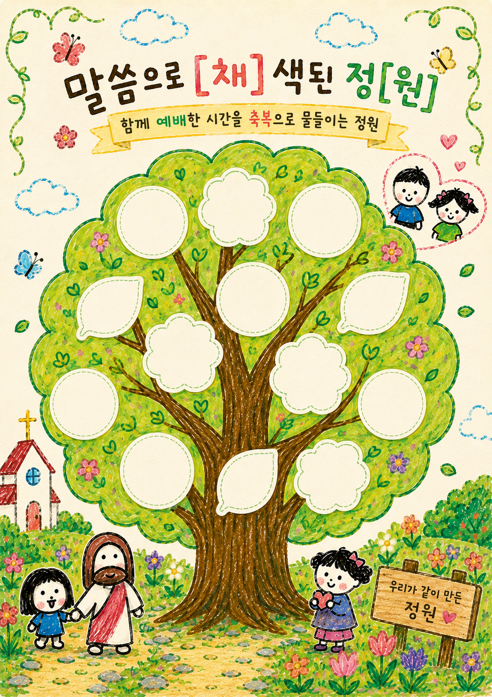
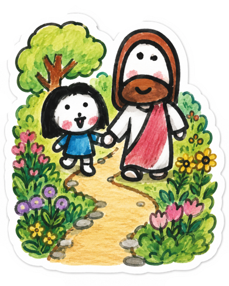
INVITATION
함께 예배한 시간을 축복으로 물들이는 하루
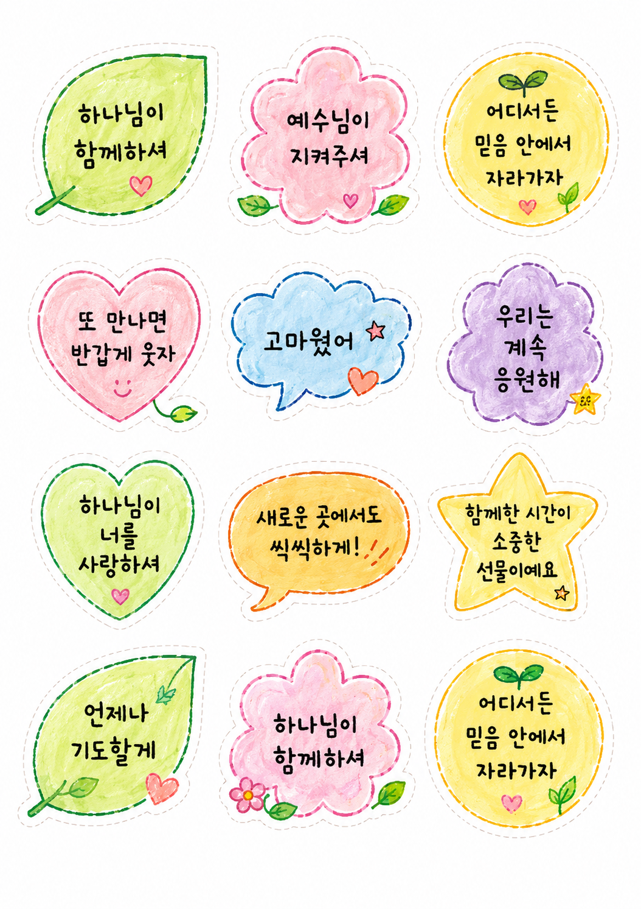
아동부 2부 활동 · 14장 PPT · A3 인쇄물
한 아이의 환송과 새친구 초청을 그림 제목 고르기, 포즈 미션, 텔레파시 퀴즈와 축복 스티커로 연결했습니다. 모두가 함께 웃고 축복하며 A3 정원을 완성했습니다.
청소년부 2부 활동 · 인쇄용 활동지 · 예배 후 대화
머리·눈·귀·심장·손·발·입을 따라 최근의 생각과 시선, 들은 말과 머무는 곳을 적었습니다. 마지막에는 오늘 붙잡을 말씀 한 문장과 이번 주의 작은 선택을 남겼습니다.
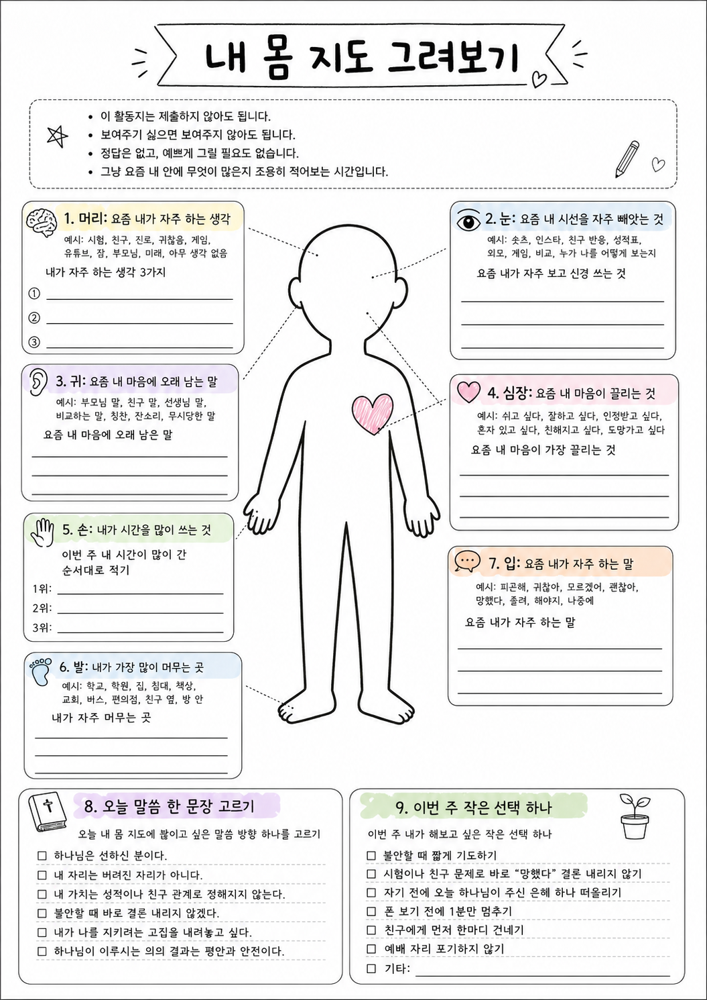
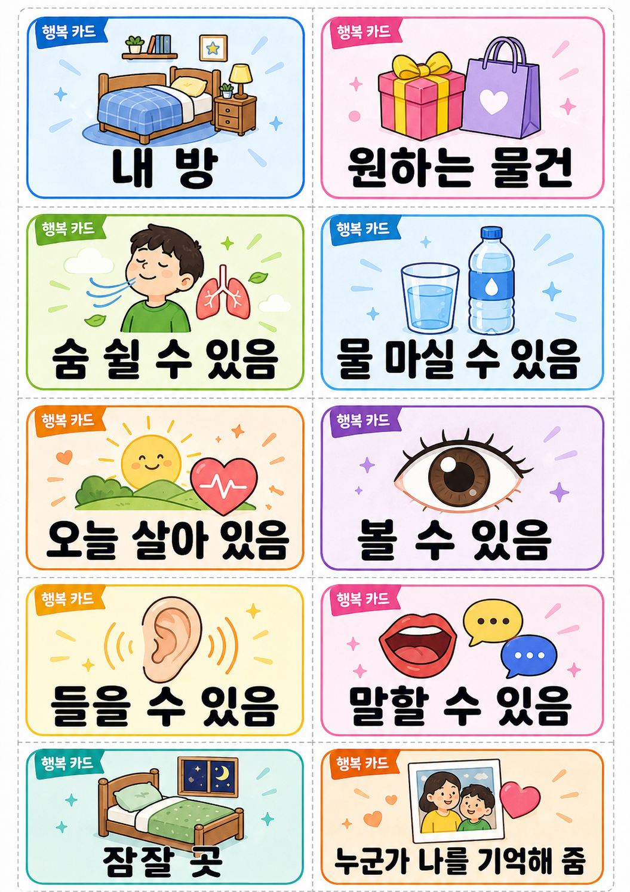
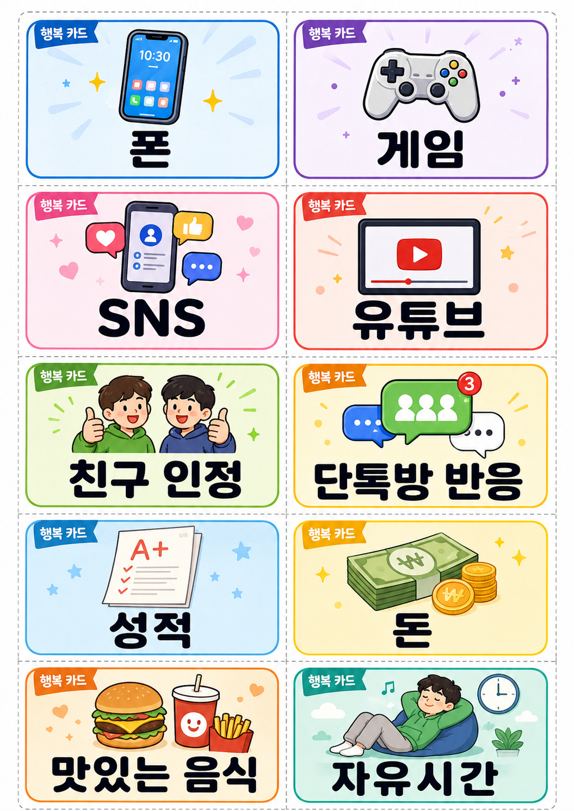
청소년부 2부 활동 · 인쇄 디자인 · 진행용 PPT
내가 만들어 낸 행복과 이미 내게 주어진 행복을 카드 선택과 주사위 보드게임으로 직접 비교했습니다. 선택의 이유가 예배 후 대화의 접점이 되도록 질문을 남겼습니다.
활동마다 다른 시각 언어를 사용하면서도 표지, 진행, 선택, 결과와 말씀 정리가 한 흐름으로 이어지도록 제작했습니다.
아동부 · 14장
손그림 정원 세계관 안에서 모험길과 세 가지 미션을 진행했습니다.
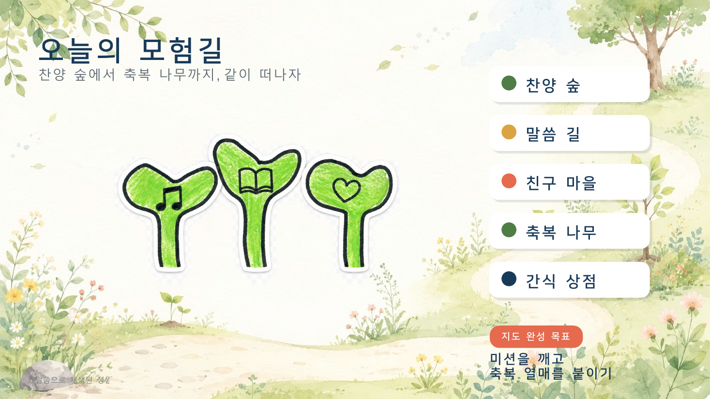
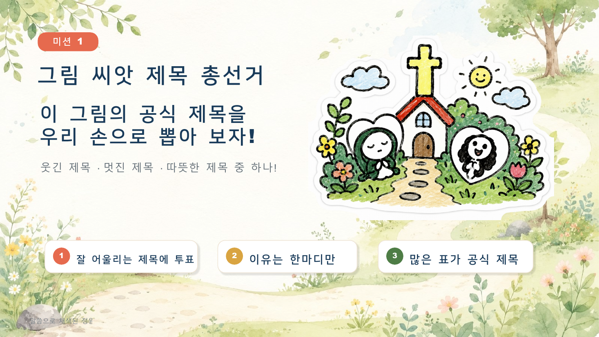
청소년부 · 10장
휴대전화 상태메시지와 말씀 DM을 연결해 자기 상태를 돌아보도록 구성했습니다.
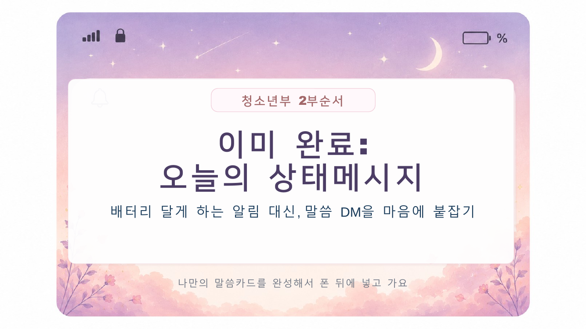
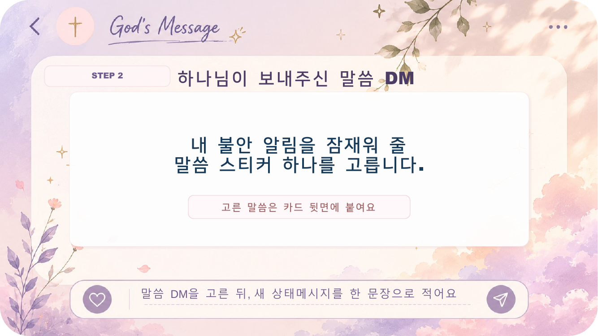
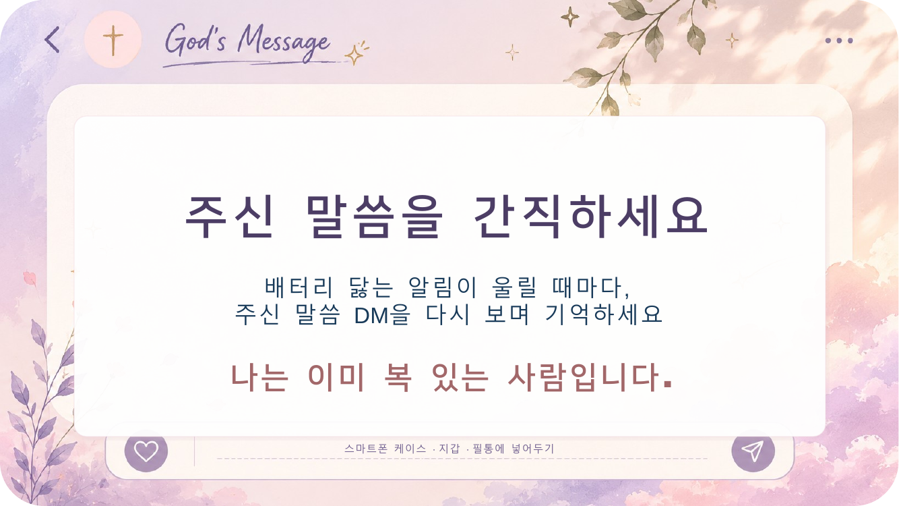
청소년부 · 23장
등교부터 하루 마무리까지 선택과 결과가 갈리는 시뮬레이션 뒤에 선택을 함께 돌아봤습니다.
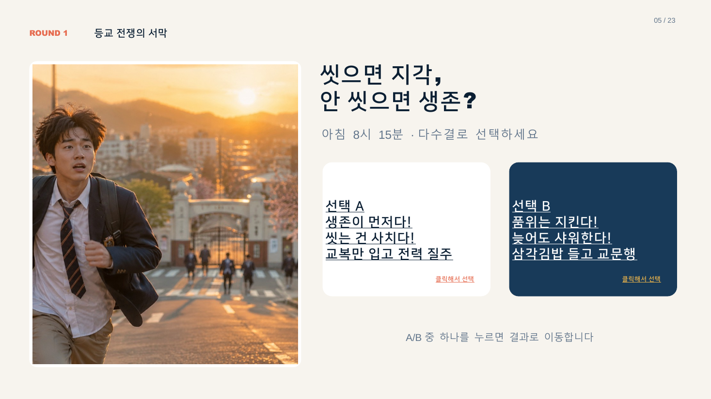
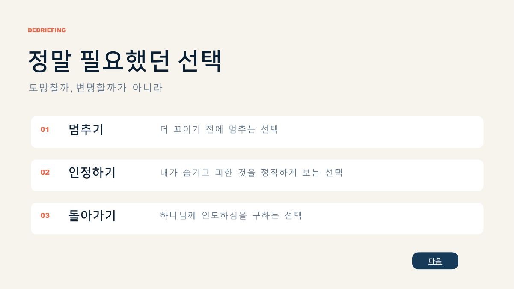
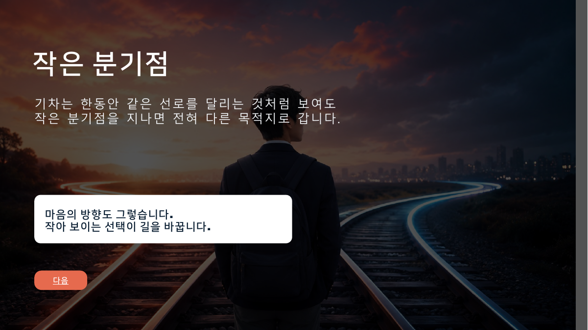
기억하고 이어가는 돌봄
돌봄은 한 번의 긴 대화보다, 아이가 한 말과 관심사를 기억하고 다음 주에 다시 묻는 과정이라고 생각합니다. 필요한 내용은 교사와 나누고 작은 역할과 기도로 연결합니다.
예배에서 다음 만남까지
예배와 활동에서 나온 말과 관심사를 날짜별로 남기고 다음 대화와 역할까지 이어서 관리했습니다.
첫 방문 가정을 위한 안내
예배 전 준비부터 2부 활동, 첫 방문의 자리 안내와 다음 연결까지 한 화면에 정리했습니다.
사역에서 배운 운영의 원칙
활동에서 나온 말은 다음 대화와 기도로 이어 갔고, 진행 중 발견한 점은 다음 주 규칙과 자료에 바로 반영했습니다.
익명 응답, 활동지, 팀 미션, PPT 보조 등 각자가 참여할 수 있는 여러 통로를 마련했습니다.
활동지와 선택 질문에서 나온 학업, 입시, 관계, 진로에 관한 생각을 예배 후 대화와 기도 제목으로 이어 갔습니다.
활동에서 나온 한마디를 기록하고 다음 주에 다시 안부를 물으며 작은 역할과 교사 협력으로 연결했습니다.
활동의 규칙과 시간, 질문 순서와 교사 역할을 기록하고 다음 활동의 준비 방식에 바로 반영했습니다.
활동에서 나온 한마디를 기억하고 다시 묻는 일은 다음세대 사역을 이어 가는 중요한 출발점이었습니다.
설교 · 예배 · 찬양인도
사역을 이어 온 방식
말씀과 다음세대, 예배와 돌봄, 이를 뒷받침하는 운영을 서로 떨어진 일로 두지 않고 한 흐름으로 연결해 왔습니다. 반복 행정을 정리해 목회자와 교사가 기도하고 사람을 기억할 시간을 확보하고, 아이들과 청소년들이 말씀을 자기 삶에서 붙잡는 순간을 꾸준히 살폈습니다.